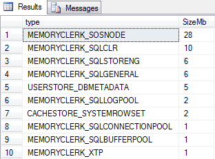

- MS SQL. Troubleshooting
- SQL Server Memory Buffer Pools
- SQL Server Buffer Pool in action
- Troubleshooting the CXPACKET wait type in SQL Server
- Буферный кеш
- Коэффициент попаданий в буферный кеш
- Showplan Operator of the Week – SORT
MS SQL. Troubleshooting¶
SQL Server Memory Buffer Pools¶
Когда страница изменяется в памяти из-за модификации данных (вставка/обновление/удаление), она называется «грязной» страницей.
С другой стороны, если страница, которая не изменена, называется «чистой» страницей.
До SQL 2005 не было простого способа найти информацию о страницах в пуле буферов. Начиная с SQL Server 2005, каждая страница данных в пуле буферов имеет один дескриптор буфера.
Дескрипторы буфера DMV может однозначно идентифицировать каждую страницу данных, которая в данный момент кэшируется в экземпляре SQL Server в пуле буферов.
Этот DMV sys.dm_os_buffer_descriptors возвращает кэшированные страницы для всех пользовательских и системных баз данных.
Сюда входят страницы, связанные с базой данных ресурсов, которая является скрытой системной базой данных.
Cколько страниц чистого и грязного типа для каждой базы данных.
SELECT (CASE
WHEN ( [database_id] = 32767 ) THEN 'Resource Database'
ELSE Db_name (database_id)
END ) AS 'Database Name',
Sum(CASE
WHEN ( [is_modified] = 1 ) THEN 0
ELSE 1
END) AS 'Clean Page Count',
Sum(CASE
WHEN ( [is_modified] = 1 ) THEN 1
ELSE 0
END) AS 'Dirty Page Count'
FROM sys.dm_os_buffer_descriptors
GROUP BY database_id
ORDER BY DB_NAME(database_id);

Обычно мы выполняем DROPCLEANBUFFERS как грязную команду, потому что мы не должны использовать ее на рабочем сервере, потому что это увеличит дисковый ввод-вывод. Это связано с тем, что все страницы будут снова извлекаться с диска по мере их удаления из буфера.
Таким образом, чистая страница — это страница, которая не изменилась с момента последнего чтения или записи на диск.
Грязная страница была изменена и копирование на диск и в память отличается.
Еще один способ получить сведения о пуле буферов — использовать счетчики производительности (Perfmon). Существует объект под названием «Менеджер буферов».
Как грязные страницы сбрасываются на диск?
Ну, это работа контрольной точки, которая является фоновым процессом. Целью контрольной точки является сброс грязных страниц, чтобы свести к минимуму количество транзакций, которые необходимо выполнить с повтором транзакций во время потенциального восстановления.
Что делать, если есть давление памяти? Будут ли чистые страницы автоматически удаляться из буферного пула? Да.
Lazywriter (опять же фоновый процесс) делает это за нас. Этот процесс очищает пакеты устаревших буферов. Основная цель Lazywriter — поддерживать Free List.
SQL Server Buffer Pool in action¶
Во-первых, нам нужно убедиться, что у нас есть холодный кеш для работы; Это буферный пул, который не заполнен никакими страницами. Мы можем сделать это без перезапуска SQL Server, введя DBCC или команду консоли базы данных под названием DROPCLEANBUFFERS. Прежде чем сделать это, нам нужно выполнить команду CHECKPOINT, это гарантирует, что любые грязные страницы будут записаны на диск с очисткой буферов, для справки, буфер — это 8-килобайтная страница, находящаяся в памяти.
CHECKPOINT -- writes dirty pages to disk, cleans the buffers
DBCC DROPCLEANBUFFERS -- removes all buffers
--check MEMORYCLERK_SQLBUFFERPOOL allocation
SELECT TOP 10 [type], SUM(pages_kb) / 1024 AS SizeMb
FROM sys.dm_os_memory_clerks
GROUP BY [type]
ORDER BY SUM(pages_kb) / 1024 DESC
Если мы запустим это, как только наш буферный пул будет очищен, мы увидим результаты нашего запроса, похожие на изображение ниже:

Здесь мы можем увидеть некоторые из текущих распределений памяти SQL Server, и важно понимать, что, хотя мы сбрасывали буферный пул, есть еще другие вещи, использующие память, такие как SQLOSNODE, CLR и клерки механизма хранения, среди прочего, на самом деле сам буферный пул не на нуле, но на самом деле имеет выделение 1 МБ.
Это важно знать, потому что каким-то образом это связано с нашей максимальной настройкой памяти сервера в SQL Server (как показано ниже).
Troubleshooting the CXPACKET wait type in SQL Server¶
Тип ожидания SQL Server CXPACKET является одним из наиболее неправильно интерпретируемых статистических данных ожидания.
Термин CXPACKET произошел от Class Exchange Packet, и по своей сути его можно описать как строки данных, которыми обмениваются два параллельных потока, являющихся частью одного процесса.
Один поток является «потоком-производителем», а другой поток — «потоком-потребителем». Этот тип ожидания напрямую связан с параллелизмом и возникает в SQL Server всякий раз, когда SQL Server выполняет запрос с использованием параллельного плана.
Вообще говоря, тип ожидания CXPACKET является нормальным для SQL Server и указывает на то, что SQL Server использует параллельный план при выполнении запроса, который обычно быстрее по сравнению с запросом, выполняемым в сериализованном процессе. Когда используется параллельный план, запрос выполняется в нескольких потоках, и запрос может быть продолжен только после завершения всех параллельных потоков.
Это означает, что запрос будет таким же быстрым, как и самый медленный поток.
Буферный кеш¶
Основным потребителем памяти является буферный кеш. Ещё раз вспомним как работает СУБД - сначала данные считываются с диска в буферный кеш, и только потом они используются из буферного кеша запросами (на чтение, на обновление, на удаление). В буферном кеше содержится часть базы которые используются или использовались запросами. Чтобы посмотреть чем занята память в MS SQL Server, можно использовать следующий скрипт
SELECT OBJECT_NAME(P.[OBJECT_ID]) AS [OBJECT NAME],
P.INDEX_ID,
DB_NAME(B.DATABASE_ID),
I.NAME,
CAST(COUNT(*)/128.0 AS DECIMAL(10, 2)) AS [BUFFER SIZE(MB)],
COUNT(*) AS [BUFFER COUNT],
P.ROWS AS [ROW COUNT],
P.DATA_COMPRESSION_DESC AS [COMPRESSION TYPE]
FROM SYS.ALLOCATION_UNITS AS A WITH (NOLOCK)
INNER JOIN SYS.DM_OS_BUFFER_DESCRIPTORS AS B WITH (NOLOCK) ON A.ALLOCATION_UNIT_ID = B.ALLOCATION_UNIT_ID
INNER JOIN SYS.PARTITIONS AS P WITH (NOLOCK)
INNER JOIN SYS.INDEXES AS I WITH (NOLOCK) ON P.OBJECT_ID = I.OBJECT_ID
AND P.INDEX_ID = I.INDEX_ID ON A.CONTAINER_ID = P.HOBT_ID
WHERE B.DATABASE_ID = CONVERT(Int,DB_ID())
AND P.[OBJECT_ID] > 10
GROUP BY P.[OBJECT_ID],
P.INDEX_ID,
P.DATA_COMPRESSION_DESC,
P.[ROWS],
DB_NAME(B.DATABASE_ID),
I.NAME
ORDER BY [BUFFER COUNT] DESC OPTION (RECOMPILE);

Пример использования скрипта - запускаем его в какой то момент на рабочей базе и смотрим какие таблицы занимают много места в оперативной памяти. Начав разбираться что это за таблицы вы можете обнаружить неэффективные запросы которые читают много записей. Простой пример – вы хотите прочитать из таблицы одну запись. В таблицы находится 10 млн строк. Запрос не использовал индекс и прочитал все строки таблицы. Для того чтобы найти одну строку запросу пришлось прочитать всю таблицу. И эта вся таблица (10 млн строк, допустим это 500 тыс. страниц) будет подтянута с диска в буферный кеш . И эта таблица попала в данный скрипт в топ. В этой ситуации мы столкнулись с неэффективным запросом который читал лишние данные. Когда вы этот запрос оптимизируете то увидите что эта таблица уже не попадает в результат данного скрипта. Соответственно, повысится эффективность использования памяти на СУБД.
Коэффициент попаданий в буферный кеш¶
Коэффициент попаданий в буферный кеш (Buffer cache hit ratio (BCH)) определяет процент страниц данных, прочитанных из буферного кеша, обычно движок sql пытается найти запрошенную страницу из кеша, если не найден там, он извлекает страницу с диска, как я упоминал выше. Номинально 90-95% плюс порог хорош для BCH.
Если администратор баз данных видит низкие значения коэффициента попаданий в буферный кэш, следует проверить статистику ожидаемого срока службы страницы.
SELECT
physical_memory_kb,
virtual_memory_kb,
committed_kb,
committed_target_kb
FROM sys.dm_os_sys_info;

- physical_memory_kb: Total physical memory installed on the server.
- virtual_memory_kb: Total amount of virtual memory available to SQL Server.
- committed_kb: The amount of memory currently allocated by the buffer cache for use by database pages. - committed_target_kb: This is the amount of memory the buffer cache “wants” to use.
If the amount currently in use (indicated by committed_kb) is higher than this amount, then the buffer manager will begin to remove older pages from memory. If the amount currently in use is lower, than the buffer manager will allocate more memory for our data.
Ожидаемая продолжительность жизни страницы (Page Life Expectancy )¶
PLE — это в среднем мера того, как долго (в секундах) страница будет оставаться в памяти без доступа, после чего она будет удалена. Это показатель, который мы хотим повысить, поскольку мы хотим, чтобы наши важные данные оставались в буферном кеше как можно дольше. Когда PLE становится слишком низким, данные постоянно считываются с диска в буферный кеш, удаляются из кеша и, вероятно, снова считываются с диска в ближайшем будущем. А это значит, что наш SQL Server работает медленно!
Чтобы просмотреть текущий PLE на сервере, вы можете запустить следующий запрос, который извлечет текущее значение из представления динамического управления счетчиком производительности:
SELECT *
FROM sys.dm_os_performance_counters
WHERE dm_os_performance_counters.object_name LIKE '%Buffer Manager%'
AND dm_os_performance_counters.counter_name = 'Page life expectancy';

cntr_value is the value of the performance counter, and on my quiet local server is 114,598 seconds.
SELECT Ple.[node],
Ltrim(Str([pagelife_s]/3600))+':'+Replace(Str([pagelife_s]%3600/60, 2), Space(1), '0')+':'+Replace(Str([pagelife_s]%60, 2), Space(1), '0') [pagelife],
Ple.[pagelife_s],
Dp.[databasepages] [bufferpool_pages],
Convert(Decimal(15, 3), Dp.[databasepages]*0.0078125) [bufferpool_mb],
Convert(Decimal(15, 3), Dp.[databasepages]*0.0078125/[pagelife_s]) [bufferpool_mib_s]
FROM
(SELECT [instance_name] [node],
[cntr_value] [pagelife_s]
FROM Sys.Dm_os_performance_counters
WHERE [counter_name] = 'Page life expectancy' ) Ple
INNER JOIN
(SELECT [instance_name] [node],
[cntr_value] [databasepages]
FROM Sys.Dm_os_performance_counters
WHERE [counter_name] = 'Database pages' ) Dp ON Ple.[node] = Dp.[node]

Администратору баз данных необходимо полагаться на объем памяти, используемый кэшем данных в SQL Server, чтобы определить, когда ожидаемый срок службы страницы является признаком надвигающихся проблем. Это означает, что я заменил старое пороговое значение 300 более разумным значением (DataCacheSizeInGB/4GB *300) в качестве основы для того, чтобы начать расследование.
Это означает, что если сервер имеет 64 ГБ памяти и 58 ГБ выделено для кеша, значение PLE должно быть 58 * 75 = 4350 секунд.
Таким образом, для системы с 64 ГБ ОЗУ и параметром MaxServerMemory SQL, равным 58 ГБ, значение «минимального PLE до возникновения проблемы» равно 4350.
Что мы можем сделать, если PLE слишком низким?
Если проблема возникает сейчас, выясните, какие запросы вызывают операции чтения,
используя DMV sys.dm_os_waiting_tasks, чтобы узнать, какие потоки ожидают чтения страниц с диска (т. е. те, которые ожидают PAGEIOLATCH_SH), а затем исправьте эти запросы.
Если проблема возникала в прошлом, найдите в динамическом административном представлении sys.dm_exec_query_stats запросы с большим количеством физических чтений или используйте инструмент мониторинга, который может предоставить вам эту информацию (например, представление Top SQL в Performance Advisor), а затем исправьте эти запросы.
Сопоставьте сброс PLE с запланированными заданиями агента, выполняющими обслуживание базы данных.
Ищите запросы с очень большими грантами памяти для выполнения запросов с помощью DMV sys.dm_exec_query_memory_grants, а затем исправьте эти запросы.
Время жизни страниц в буферном кеше.¶
Это один из самых важных показателей. Сокращённо его называют PLE. Рассмотрим схему работы СУБД. Эта схема одинакова для всех СУБД, просто некоторые понятия могут по разному называться.
Есть буферный кеш, который находится в оперативной памяти. Он является основным потребителем памяти для СУБД. Запросы читают данные именно из буферного кеша. Данные в буферном кеше размещены в виде страниц. Данные в страницы подтягиваются из диска (для MS SQL Server это файл .mdf).
На диске данные также хранятся в виде страниц. Страница состоит из строк. На одной странице данных может находится от нескольких десятков до несколько сотен строк. Размер страницы в разных СУБД: - MS SQL Server - 8 КБ - PostgreSQL - 8 КБ по умолчанию, но может изменятся
Так вот , для того чтобы запрос мог прочитать данные из буферного кеша, сначала их (данные) нужно подтянуть в буферный пул (кеш) с диска. Потом запрос сможет эти данные считать. Как правило, первое выполнение запроса происходит медленнее, так как считывание с диска в буферный кеш занимает время. А при следующем выполнении запроса диск уже не задействуется и данные читаются с уже заполненного буферного кеша.
Вторая причина почему первый раз запрос выполняется медленнее - оптимизатор при первом выполнении генерирует план запроса. При следующих выполнениях план запроса уже не строится а используется готовый (планы запросов хранятся в процедурном кеше). Рассмотрим пример - выполняется тяжёлый запрос, который читает много данных. Почему читает много данных - например потому что он неоптимальный. Или потому что действительно такой отчёт и нужно прочитать много данных. Может возникнуть ситуация когда в буферном кеше не хватит места. В этом случае данные которые там находились и использовались другими запросами, будут вытеснены. Поэтому если попытаться выполнить предыдущие запросы , опять произойдет чтение данных с диска чтобы наполнить буферный кеш. Это называется вымыванием буферного кеша (или обрушением буферного кеша).
Данный счётчик позволяет отслеживать такие ситуации. Рекомендуемые значения для него >1000 сек, то есть данные , считанные с диска , должны находиться в буферном кеше не меньше 1000 сек.
Чем чаще будут вытесняться данные из буферного кеша, тем меньше будет значение этого счётчика. А если оперативной памяти много и в итоге в буферном кеше разместится вся база, тогда значение этого счётчика будет большим. Провалы будут только после перезагрузки компьютера или когда вы очистите буферный кеш с помощью команды. Если смотреть график этого счётчика, модно увидеть в некоторых местах провалы, когда его значение резко уменьшается. Это говорит о том что было вытеснено много страниц данных из буферного кеша. То есть выполнялся большой тяжелый запрос который считал много данных и ему не хватило места в буферном кеше. Вероятней всего что это был неоптимальный запрос. Потом мы в графике видим что после этого провала значение счётчика стабилизировалось, а потом через какое то время видим опять провал. - значит этот (или другой тяжёлый) запрос опять выполнялся.
Showplan Operator of the Week – SORT¶
- SQL Server Buffer Pool in action
- Troubleshooting the CXPACKET wait type in SQL Server
- SQL Server Memory Buffer Pools: Understand the Basics
- Fabiano Amorim - цикл статей про ms sql
- Справочник по логическим и физическим операторам Showplan Операторы описывают, как SQL Server выполняет запрос или
инструкцию языка DML. Оптимизатор запросов использует операторы для построения плана запроса, чтобы создать результат, заданный в запросе, или произвести операцию, указанную в инструкции DML. План запроса — это дерево физических операторов. Можно просмотреть план запроса с помощью инструкций SET SHOWPLAN, параметров графического плана выполнения в среде SQL Server Management Studioи классов событий SQL Server Profiler Showplan.